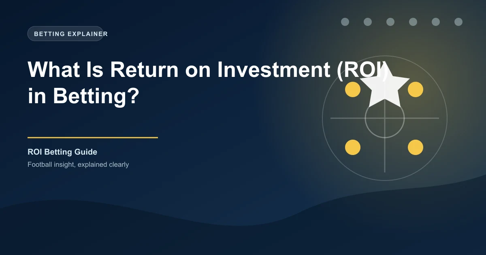

Every serious bettor eventually asks the same question: am I actually making money? It does not matter how many bets you win or lose in isolation. What matters is whether your overall approach generates profit relative to the money you stake. This is where Return on Investment comes in, and it is arguably the single most important metric for any football bettor to understand and track.
ROI tells you how efficiently your money is working. It strips away the noise of individual results and gives you a clear percentage that shows whether your betting strategy is genuinely profitable or whether you are slowly bleeding capital. If you have never tracked your ROI before, this guide will show you exactly how to calculate it, what benchmarks to aim for, and how to use it to improve your long-term betting performance.
Return on Investment measures the profit you have made relative to the total amount of money you have staked. The formula is straightforward:
ROI = (Total Profit / Total Stakes) x 100
If you staked a total of £1,000 across all your bets and ended up with a profit of £85, your ROI is 8.5%. This means for every £100 you bet, you earned £8.50 in return. That may sound modest, but in the context of long-term betting, it is a genuinely strong edge over the bookmaker.
The beauty of ROI is its simplicity. You do not need to know the outcome of every individual bet to understand whether you are winning overall. You simply need two numbers: your total profit or loss, and your total amount staked. Divide the first by the second, multiply by one hundred, and you have your answer.
This makes ROI far more useful than looking at your win rate in isolation. A bettor who wins 40% of their bets at average odds of 2.50 is in a much stronger position than one who wins 60% of bets at odds of 1.30. The first bettor is likely profitable. The second may be losing money despite a far higher strike rate. ROI captures this difference.
ROI can be calculated at two levels: for individual bets and for your overall betting portfolio. Both are useful, but they serve different purposes.
Calculating ROI for a single bet is relatively simple. If you stake £50 on a match at odds of 2.10 and win, your profit is £55. Your ROI on that specific bet is (£55 / £50) x 100 = 110%. If you lose, your ROI is (-£50 / £50) x 100 = -100%. While this calculation is mathematically correct, it is not particularly useful on its own because a single bet tells you almost nothing about your skill or edge.
The real power of ROI emerges when you calculate it across your entire betting activity over a meaningful sample size. This means tracking every single bet you place, recording the stake, the odds, and the outcome, and then running the calculation at the end of a week, month, or season.
Over the course of a month you place 60 bets with a combined total stake of £600. Your total profit from those bets is £42. Your ROI is (£42 / £600) x 100 = 7%. This tells you that your strategy generated a 7% return on the money you risked during that period, which is a very solid result.
The key here is sample size. A 7% ROI over 5 bets means nothing. A 7% ROI over 500 bets means everything. The larger the sample, the more reliable the figure becomes, and the more accurately it reflects your true edge.
This is where many bettors get confused. They hear about tipsters claiming 30% or 40% ROI and assume anything below that is failure. The reality is very different.
Professional bettors and sharp syndicates typically operate with an ROI in the range of 2% to 5%. That may sound underwhelming, but consider the scale. A syndicate placing millions of pounds per year at a 3% ROI generates enormous profit. For individual bettors with smaller bankrolls, the numbers are more modest, but the principle remains the same.
The most important takeaway is that any positive ROI over a large sample size is a genuine achievement. The bookmaker's margin is typically between 3% and 8%, which means you need to overcome that built-in disadvantage just to break even. Consistently achieving a 5% ROI means you are outperforming the house edge by a significant margin.
Do not compare your ROI to others without considering the odds ranges they bet at. A 5% ROI on heavy favourites at odds of 1.20 is a very different achievement from a 5% ROI on underdogs at odds of 3.50. Higher odds naturally carry more variance, so sustainable ROI tends to be lower for bettors who target bigger prices.
Many bettors use the terms ROI and yield interchangeably, but there is a technical difference that matters once you start tracking your performance seriously.
ROI measures your profit relative to your total investment (total stakes) over a given period. Yield measures your profit relative to your total stakes as well, but it is typically calculated on a per-bet or per-market basis to show average return per unit staked.
In practice, the formulas are often identical, and many people use them as synonyms. However, some bettors use yield to describe their average return per bet, while ROI describes their overall return on capital deployed. The distinction is subtle, and for most practical purposes the numbers will be the same.
Most bettors do not track their performance at all. They remember their big wins vividly, forget their small losses gradually, and walk away with a distorted picture of how they are actually doing. This is one of the most dangerous patterns in betting psychology.
Without tracking ROI, you cannot:
Tracking ROI transforms betting from a guessing game into a measurable activity. It forces honesty. When you look at the cold, hard percentage at the end of a month, there is no room for excuses or selective memory.
One of the most practical applications of ROI is evaluating whether a tipster or prediction service is worth following. In an industry flooded with exaggerated claims and cherry-picked results, ROI provides an objective measure.
When evaluating your own performance, apply the same rigour. Set up a spreadsheet or use a betting tracker app to log every single bet with the following information: date, match, market, selection, odds, stake, result, profit or loss. At the end of each month, calculate your overall ROI and compare it to your targets.
Your staking strategy has a direct impact on your ROI calculation and, more importantly, on your actual profitability. The relationship is more nuanced than most bettors realise.
Flat staking, where you bet the same amount on every selection, produces the most honest and readable ROI figure. It shows your pure edge without any distortion from varying stake sizes. This is why most professional bettors recommend flat staking as the baseline approach.
More aggressive staking strategies like the Kelly Criterion can theoretically maximise your ROI over time, but they also increase variance dramatically. A bettor using fractional Kelly may achieve a higher long-term ROI than one using flat stakes, but the journey will be far bumpier.
The critical point is this: ROI is only meaningful if your staking is disciplined and consistent. A bettor who doubles their stake after a loss to "recover" is not improving their ROI. They are increasing their risk and distorting the metric.
If you want to compare your ROI to a professional benchmark, use flat staking of exactly 1 unit per bet across a minimum of 500 bets. This gives you the most accurate and comparable measure of your true edge in the market.
Knowing the formula is one thing. Actually implementing a tracking system is another. Here are practical steps to build an ROI tracking habit that will pay dividends over time.
The discipline of tracking every bet also has a psychological benefit. When you know you have to record every wager, you become more selective about what you bet on. Impulse bets and emotional chases become less appealing when you know they will show up in your permanent record.
Even bettors who understand ROI can fall into traps that distort their results or lead them to false conclusions.
ROI does not exist in a vacuum. It connects directly to your bankroll management and determines how quickly your bankroll grows or shrinks. A bettor with a 5% ROI flat-staking at 2% of bankroll per bet will grow their bankroll slowly but steadily. The same ROI with 10% of bankroll per bet creates much faster growth but also much higher risk of ruin.
Understanding this relationship is key to setting realistic expectations. If your bankroll is £500 and you are achieving a 5% ROI, you are looking at a profit of roughly £25 per 50 bets. That is the reality of profitable betting. It is not glamorous, but it is real, and it compounds over time.
The compound effect is where ROI becomes truly powerful. A consistent 5% monthly return on a betting bankroll compounds dramatically over a year. Month after month, the profits generate their own profits, and the growth curve accelerates. This is why professional bettors think in terms of long-term ROI rather than individual results.
Use our free Ticket Builder to structure your bets strategically. Apply what you learn about ROI to make every stake count.
 Win
Win